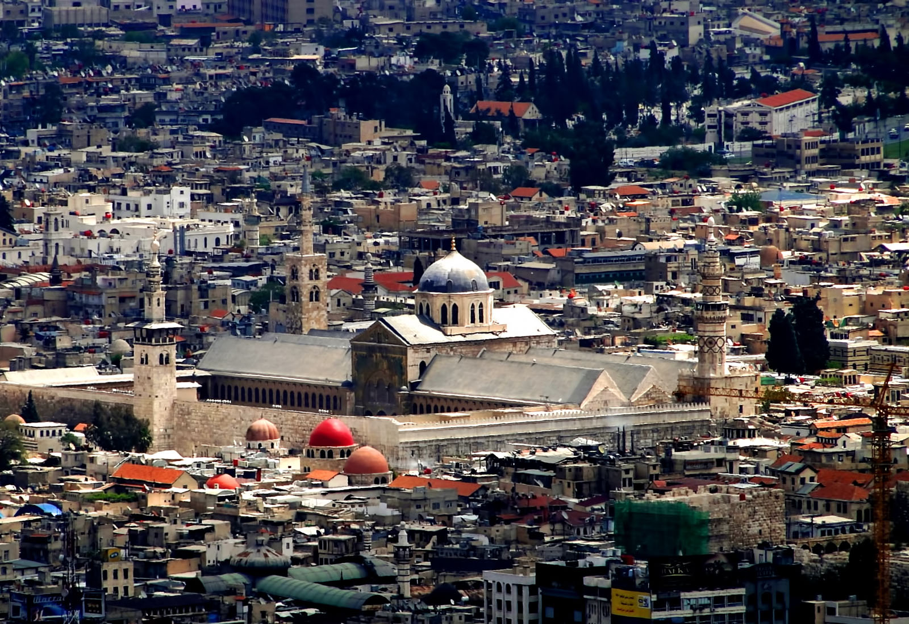
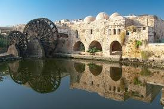

DAMAS
L'histoire ancienne de Damas nous est attestée par les fouilles entreprises
à Tell Ramad, à la périphérie de la ville, qui ont démontré que la vieille ville était habitée
dès 8 000 à 10 000 av. J.-C.1, ce qui permet de la considérer parmi les
villes les plus continuellement habitées dans le monde. Toutefois, Damas ne semble pas avoir
eu de l'importance jusqu'à l’avènement des Araméens, nomades sémitiques arrivés de Mésopotamie2
Damas faisait partie de la province d'Amourrou dans l'empire des Hyksos, entre 1720 et
1570 av. J.-C.3 La mention la plus ancienne dans les archives égyptiennes remonte à 1350 av.
J.-C. sur les tablettes d'Amarna, où la ville (appelée Dimašqa) était dirigée par le roi Biryawaza. La région de Damas, comme le reste de la Syrie, était l'enjeu des affrontements entre les Hittites au nord et les Égyptiens au sud, qui se terminent par un traité de paix dans lequel Hattusili concède à Ramses II le contrôle de la région de Damas en 1259 av. J.-C.4 L'arrivée des Peuples de la Mer, autour de 1200 av. J.-C. marquait la fin de l'âge du bronze dans cette région et apporta de nouveaux développements dans les techniques de la guerre5. Ces événements ont contribué à faire émerger Damas comme un nouveau centre d'intérêt dans une période de transition entre l'âge du bronze et l'âge du fer.
Damas est mentionnée dans la Bible, dans le livre de la Genèse (14;15), relatant l'histoire de
la guerre des Rois à l'époque du patriarche Abraham6, il est écrit « la ville de Damas est d'une
grande beauté et toute description, si longue soit-elle, est toujours trop courte pour ses belles qualités »7

ALEP
Alep: (حلب, Ḥalab en arabe ; Βέροια Beroia dans l'Antiquité) est une ville de Syrie,
chef-lieu du gouvernorat d'Alep, le gouvernorat de Syrie le plus peuplé, situé dans le nord-ouest du pays. Pendant des siècles, Alep a été la ville la plus grande de la région syrienne et la troisième plus grande ville de l'Empire ottoman (après Constantinople et Le Caire). Avec une population de 2 132 100 habitants en 20042, Alep était la ville la plus peuplée du pays et du Levant avant l'arrivée de la guerre civile.
Alep est une ancienne métropole, l'une des plus vieilles villes du monde à avoir été constamment habitée,
étant habitée depuis le VIe millénaire av. J.-C.. Son importance historique est attribuée à son emplacement
stratégique en tant que centre de commerce à mi-chemin entre la mer méditerranée et la Mésopotamie
(l'Irak moderne), puis à sa situation sur la route de la soie.
Lorsque le Canal de Suez a été inauguré en 1869, le commerce a été dévié vers la mer et Alep commença à
décliner doucement. À la chute de l'Empire ottoman après la Première Guerre mondiale, Alep céda le nord
de son arrière-pays à la Turquie moderne de la même manière que le chemin de fer Berlin-Bagdad. Dans les
années 1940, la ville a perdu son principal accès à la mer lorsqu'Antioche et Alexandrette sont rattachés
à la Turquie. Ce déclin a joué à aider à la préservation de l'Ancienne ville d'Alep, son architecture médiévale
et son patrimoine traditionnel classé au patrimoine mondial de l'humanité par l'Unesco en 1986. Depuis les années
1990, la ville montre un nouveau dynamisme et une forte croissance,
mais a subi d'importantes destructions au cours de la bataille d'Alep.
.

Hama
Hama (en arabe : ḥamāh, حماة), Hamah et parfois Hamath,
est une ville se trouvant en Syrie, chef-lieu du gouvernorat de Hama. Elle était
connue dans l'Antiquité sous le nom d'Epiphania. De la forteresse au centre de la ville il
ne reste guère que la colline sur laquelle elle était construite en bordure de l'Oronte. Elle fut le
théâtre de violents affrontements entre les Frères musulmans, les nationalistes arabes du Baath irakien,
la gauche syrienne et l'armée Syrienne de Hafez el-Assad en février 1982.En 1980, un Frère musulman tente
d’assassiner le président syrien Hafez el-Assad. Plusieurs imams sont alors arrêtés par les autorités. Le 2 février 1982,
sous la conduite de 150 officiers des frères musulmans, la ville de Hama se révolte. Assad réagit violemment
en donnant l’ordre d’assiéger la ville et de la bombarder à l’artillerie lourde. On estime entre 7 000 et 35 000 le nombre
de victimes lors de la répression de cette insurrection1.
La ville aujourd'hui est une ville agréable, étape entre Damas et Alep, dominée
par les très grandes norias sur le fleuve Oronte. Malgré la répression de 1982, Hama demeure une ville très
religieuse, tant par le nombre de mosquées (sans cesse en expansion) que par les mœurs locales.

-